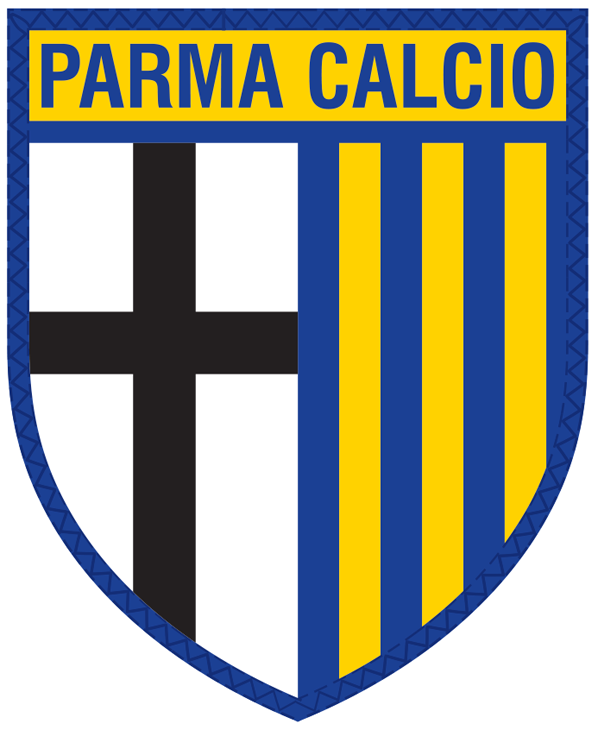
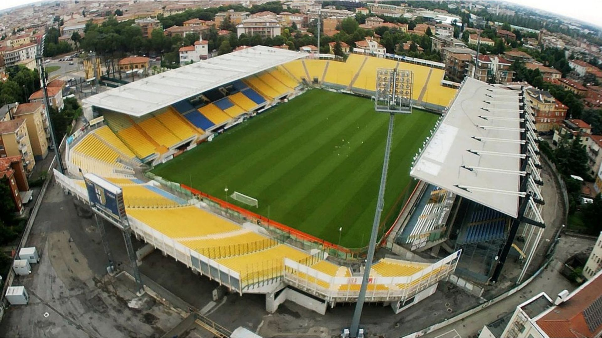

Treinador: Carlos Cuesta
A trajetória de Carlos Cuesta no Parma é definida por uma vanguarda tática brilhante e uma extraordinária capacidade de desenvolvimento coletivo, afirmando-se como um treinador de perfil inovador, analítico e de um dinamismo estratégico contemporâneo.
Estádio: Ennio Tardini
A imponência do Estádio Ennio Tardini é definida por uma herança comunitária histórica e uma atmosfera de proximidade apaixonada, afirmando-se como um palco de perfil tradicional, acolhedor e de um misticismo profundamente enraizado.

Estilo de Jogo:
O estilo de jogo de Carlos Cuesta no Parma é definido por uma matriz posicional vanguardista e uma dinâmica coletiva de elevada rotação, afirmando-se como um modelo de perfil dominador, geométrico e de uma agressividade territorial.
"Noi Siamo il Parma!"